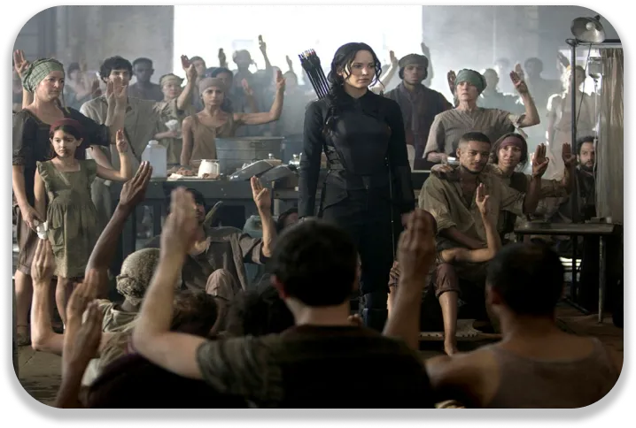

Since the release of The Hunger Games movie, the youth have dared to make their voices heard. All over the world, they are protesting against a form of authority.
An example that speaks to young people
The heroine rebels against her hostile and manipulative state. She risks denouncing this manipulation through her popularity. It all starts with three raised fingers, a sign of goodbye transformed into a sign of rebellion. Katniss, the protagonist, is the first to use it and unintentionally starts a rebellion. Other citizens dare to do the same out of exhaustion with the actions of the Capitol. A rebellion is slowly taking place thanks to the media. Snow, the president must prevent it to keep control of the population. The most courageous are not afraid of repression and dare to oppose. Some die for the rebellion and the others works harder to win.
The courage to fight
Katniss stands up for the end of the Games and for Snow's manipulation. She also rebels against the lack of respect for the poorer people. Her tenacity inspires young people to fight against injustice. When the second opus was released, some people wore the popular sign. Young people from oppressed countries and those who support them have boldly followed Katniss. Those who dare can hope to make a difference. Despite the dangers, despite the losses, to resist is to hope and to exist. All it takes is one person who dares and causes something to happen. Even a small change can be made, with willpower and tenacity.

Getting a message across
This film saga encourages people to revolt for justice. But it also sends a message to young people in more democratic countries. Young people must dare to make their voices heard like Katniss. Whether it is for political, ecological, personal ideas, etc. Hunger Games shows them that they can fight for what is important to them. Young people should not be influenced by the media. Adults have more experience. But they don't know what is best for each young person. So, we have to dare and risk. When your voice is heard, you can change things.
 To discover the director's filmography, click here!
To discover the director's filmography, click here!